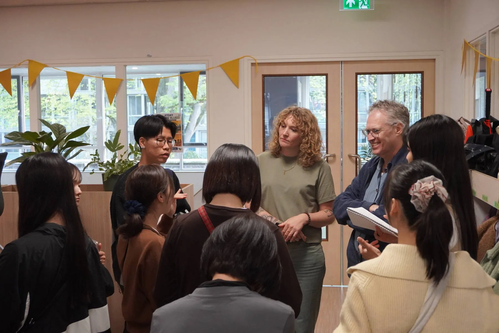
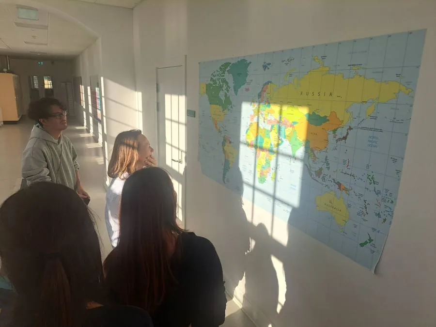
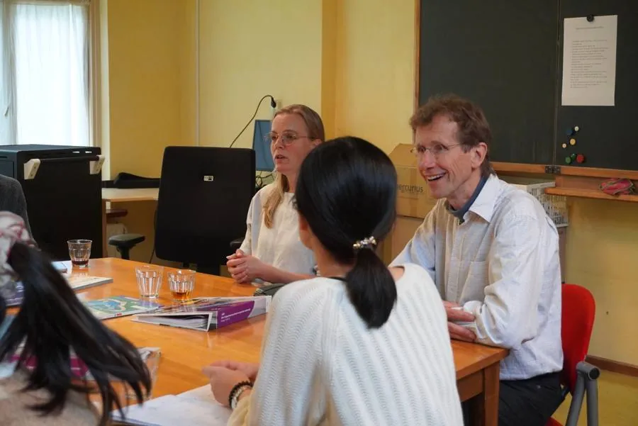
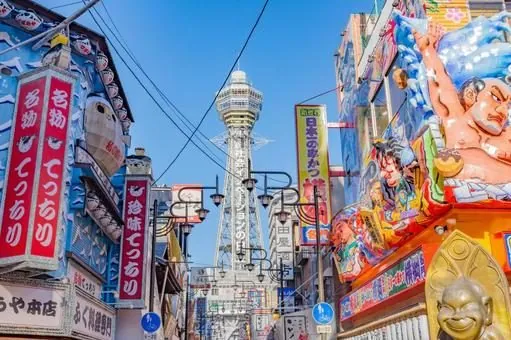

Jiyu Gakuen自由学園
Known for the idea that daily life itself is education. Students help run school life.「生活即教育」を理念に、生徒が学校生活の運営に関わる教育で知られています。
School website学校のホームページ (opens in a new tab)（新しいタブで開きます）
See education differently · 7 days in Japan教育の見方が変わる、日本での7日間
7 Days. 2 Schools. A New Perspective on Education.7日間、2つの学校、教育への新しい視点。
Step inside Japanese classrooms. Connect with local educators. Return home with fresh ideas for your own classroom.日本の教室に入り、現地の先生と対話する。新しいアイデアを、あなたの教室へ持ち帰る旅です。
Free to register · No payment required at this stage登録は無料・この段階でのお支払いはありません
About the programプログラムについて
Some of the most valuable insights come from stepping outside our own classrooms. Observe, ask questions and exchange ideas with educators in Japan.異なる教育の現場を見ることで、新しい気づきが生まれます。日本の学校を訪れ、自分の目で見て、先生たちと対話します。
You don't need to leave with all the answers. Leave with new perspectives and ideas to try.すべての答えを見つける必要はありません。新しい視点と、試してみたいアイデアを持ち帰る旅です。

What you'll do何をするか
Five perspectives to explore in Japanese schools.学校訪問では、5つのテーマを軸に観察と対話を行います。
Observe lessons and how teachers guide learning.授業を見学し、先生の教え方を知る。
See how routines and shared roles shape school life.日々の習慣や役割分担が育てるもの。
Learn the role of school activities and events.行事や学級活動の役割を知る。
Look at the structures and values behind schools.学校を支える仕組みと価値観。
Explore how students ask and own their questions.子どもが自ら問いを立てる工夫。
Every school is different. We learn through observation, conversation and reflection — not by looking for one perfect model.日本の教育を理想化するのではなく、観察・対話・振り返りを通じて学びます。
Topics you can observe depend on arrangements with each school.実際に見学・体験できるテーマは、訪問校との調整後に確定します。
Free · No payment at this stage無料・この段階でのお支払いはありません
The schools訪問する学校
One day at each school, so you can compare what you see.1校につき1日。2校を比べながら学びます。
Known for the idea that daily life itself is education. Students help run school life.「生活即教育」を理念に、生徒が学校生活の運営に関わる教育で知られています。
School website学校のホームページ (opens in a new tab)（新しいタブで開きます）The school's name, profile and website will be added once confirmed.学校名・紹介・ホームページは、確定後に掲載します。
Scheduleスケジュール
From Japanese classrooms to cultural discovery.日本の教室から、文化の発見へ。
Arrive in Japan新しい学びの旅が始まる
Meet your group and facilitator. An orientation sets the questions you will take into schools, followed by a welcome dinner.参加者とファシリテーターが顔を合わせます。学校で考えたい問いをオリエンテーションで整理し、歓迎の夕食へ。
Step inside Japanese classrooms日本の教育現場に触れる
A day at Jiyu Gakuen. Observe lessons and see how students help run daily school life.自由学園で1日を過ごします。授業を見学し、生徒が学校生活の運営に関わる様子を見ます。

Step inside Japanese classrooms日本の教育現場に触れる
Visit a second Tokyo school (to be announced) and talk with teachers. A reflection workshop helps you compare what you saw.東京の2校目（調整中）を訪れ、先生と対話します。午後は振り返りワークショップで2校を比べます。
Explore Japan日本の文化を知る
Morning in Tokyo, then the bullet train west.午前は東京観光、午後に新幹線で京都へ。
Explore Japan日本の文化を知る
Explore historic Kyoto and join a cultural experience such as a tea ceremony (planned).歴史ある京都を歩き、茶道などの文化体験に参加します（予定）。

Reflect and reimagine自分の実践を見つめ直す
Look back on the week and decide what to try at your school. Then on to Osaka for a farewell dinner.1週間を振り返り、自分の学校で試したいことを考えます。大阪へ移動し、送別の夕食。
Bring new ideas home学びを持ち帰る
Fly home from Kansai International Airport with new ideas for your classroom.新しいアイデアを持って、関西国際空港から帰国します。
School visits, cultural activities, accommodation and transport are subject to confirmation.学校訪問、文化体験、宿泊、交通手段などは今後の調整によって変更される可能性があります。
Register Your Interest参加希望を登録するWhat you'll gain得られること
Observe lessons and daily school life at two schools in Tokyo.東京の2校で、授業と日々の学校生活を見学します。
Gain new perspectives through conversations with Japanese teachers.日本の先生との対話を通じて、新しい視点を得ます。
Leave with practical ideas for your own lessons and school.自分の授業や学校で活かせるアイデアを持ち帰ります。
Program fee参加費
What's included参加費に含まれるもの
Not included含まれないもの
International flights国際線航空券 Travel insurance海外旅行保険 Visa feesビザ費用 Personal expenses個人的な支出Planned inclusions. Final details will be confirmed before applications open.現時点の予定です。最終的な内容は、申込受付の開始前に確定します。
There is no single right answer in education. Meaningful exchange between educators opens doors to new ideas.教育には答えがあるわけではありません。教育者同士の対話が、新しい可能性を生み出すと考えています。
Japan Education Journey by raise your flag
Who we are主催者について
A general incorporated association based in Kyoto, Japan. We create places where people meet, talk and learn from each other.京都を拠点に、人が出会い、対話し、学び合う場をつくる一般社団法人です。
Through Edu-tabi, we have taken Japanese educators to schools in six countries, including Denmark, the Netherlands and Finland. Japan Education Journey is the same journey in reverse.「Edu旅」では、デンマーク・オランダ・フィンランドなど6か国の学校を日本の教育者と訪ねてきました。Japan Education Journeyは、その日本版です。
FAQ
Current teachers and educators interested in learning from Japanese schools and educational culture.日本の学校や教育文化から学びたい、現職の先生・教育関係者が対象です。
Visits to two schools in Tokyo, time with Japanese educators, a cultural experience in Kyoto, and travel through Tokyo, Kyoto and Osaka. Final activities are subject to confirmation.東京の学校2校の訪問、日本の先生との交流、京都での文化体験、東京・京都・大阪の移動が含まれます。最終的な内容は今後確定します。
No. The program is planned to run in English, with an English-speaking guide and facilitator throughout.不要です。英語で進行する予定で、7日間を通して英語対応のガイド兼ファシリテーターが同行します。
The program runs during overseas school holidays, so teachers can join without missing class. Exact dates will be announced soon.海外の学校の長期休暇の時期に開催します。授業を休まずに参加できます。具体的な日程は決まり次第ご案内します。
US$3,500 per participant, excluding international flights. See “Program fee” above for what is planned to be included.1名あたりUS$3,500（国際線航空券は別）です。含まれる内容の予定は、上の「参加費」をご覧ください。
Up to 20 participants, so everyone can take part in school visits and conversations.定員は20名です。学校訪問や対話に全員がしっかり参加できる人数にしています。
We will email you the dates and full details as soon as they are confirmed. Registering is free and does not commit you to anything. You can then decide whether to apply.日程と詳細が決まり次第、メールでお知らせします。登録は無料で、参加の義務はありません。内容をご確認のうえ、お申し込みをご検討ください。
Six nights of hotel accommodation are included (twin share; single room available as an add-on). International flights are not included.ホテル6泊（2名1室）は含まれます。1人1室は追加オプションです。国際線航空券は含まれません。
Jiyu Gakuen in Tokyo is confirmed. A second Tokyo school will be announced once arrangements are final. Schools are set by the program and cannot be chosen individually.東京の自由学園が確定しています。2校目は調整が済み次第お知らせします。訪問校はプログラムで決まっており、個別に選ぶことはできません。
The itinerary is provisional. If a school visit or activity changes, we will tell you as early as possible.現在の日程は想定です。学校訪問や体験の内容が変わる場合は、できるだけ早くお知らせします。
The cancellation and refund policy will be shared with the full program details before you apply. Registering your interest is free.キャンセル・返金の条件は、お申し込み前に詳細とあわせてご案内します。参加希望の登録は無料です。
Register your interest参加希望の登録
Be the first to hear about program dates and details. No payment required at this stage.開催日程などの詳細を、いち早くお知らせします。この段階でのお支払いはありません。
We have received your details and sent a confirmation email. We will contact you with the dates and full details as soon as they are confirmed.ご登録内容を受け付け、確認メールをお送りしました。開催日程と詳細が決まり次第、ご連絡します。
No email? Please check your spam folder, or contact raiseyourflag.japan@gmail.com.メールが届かない場合は、迷惑メールフォルダをご確認いただくか、raiseyourflag.japan@gmail.com までご連絡ください。